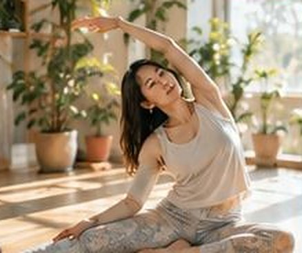
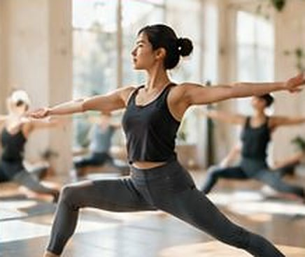

〜8:00・60分
モーニングフロー
呼吸に合わせて、とぎれずに動きます。吸いながら伸び、吐きながらたたむ。その繰り返しで、少しずつからだが温まっていきます。
- 動きの強さ
- 中くらい。後半はうっすら汗をかきます。
- 向いている方
- 朝のうちに一度からだを動かしておきたい方。何回かヨガをしたことがある方。
- すること
- 座って呼吸を数える → 四つんばいで背中を動かす → 太陽礼拝をゆっくり五回 → 立つポーズ → 仰向けで休む（5分）
- 開催日
- 月・火・水・木・金
- 担当
- 小野 遥
朝に二つ、昼に二つ、夜に二つ。動きの多いものから、ほとんど動かないものまであります。その日のからだに合わせて選んでください。
出勤前、昼休み、仕事のあと。朝から夜まで、六つのクラスがあります。どのクラスも定員は十二名、予約制です。
寝起きのこわばったからだを、ゆっくり起こす時間です。終わってから出勤に間に合います。

〜8:00・60分
呼吸に合わせて、とぎれずに動きます。吸いながら伸び、吐きながらたたむ。その繰り返しで、少しずつからだが温まっていきます。
〜10:00・60分
基本のポーズを、ひとつずつ丁寧に。動きと動きのあいだに休む時間があるので、説明を聞きながら自分の速さで進められます。
座りっぱなしで固まった肩と腰を、動かしてほぐします。昼休みにも通える長さです。

〜12:45・45分
デスクワークの合間に、短く集中して。汗をかかない程度の動きなので、着替えてそのまま午後の仕事に戻れます。
〜15:00・60分
立ち姿勢と体幹を、じっくり使います。六つのなかでは、いちばんしっかり動くクラスです。きついポーズには、らくな形も用意しています。
照明を落として、動きは少なめに。仕事帰りにそのまま寄れる時間です。
〜19:45・75分
ひとつの姿勢を三分から五分ほど保ち、力を抜いていきます。クッションやブロックでからだを支えるので、がんばって形をつくる必要はありません。
〜21:00・60分
寝ころぶ姿勢が中心の、静かなクラス。部屋のあかりは手もとが見える程度まで落とします。最後は毛布をかけて、長めに休みます。
平日は朝7:00から夜21:00まで、土日祝は9:00と14:00の二つです。祝日は、曜日にかかわらず土日と同じ時間割になります。
| クラス | 月 | 火 | 水 | 木 | 金 | 土 | 日 |
|---|---|---|---|---|---|---|---|
| モーニングフロー7:00〜8:00 | 開催 | 開催 | 開催 | 開催 | 開催 | なし | なし |
| やさしいハタヨガ9:00〜10:00 | 開催 | なし | 開催 | なし | 開催 | 開催 | 開催 |
| リフレッシュヨガ12:00〜12:45 | 開催 | 開催 | 開催 | 開催 | 開催 | なし | なし |
| コンディショニングヨガ14:00〜15:00 | なし | 開催 | なし | 開催 | なし | 開催 | 開催 |
| やさしい陰ヨガ18:30〜19:45 | 開催 | なし | 開催 | なし | 開催 | なし | なし |
| ナイトリラックスヨガ20:00〜21:00 | なし | 開催 | なし | 開催 | 開催 | なし | なし |
※ 毎月第3月曜日は定休日のため、すべてのクラスがお休みです。
※ デモサイトのため、時間割は架空のものです。
どのクラスも、開始の10分前から部屋に入れます。開始後の入室は、安全のため10分までとしています。